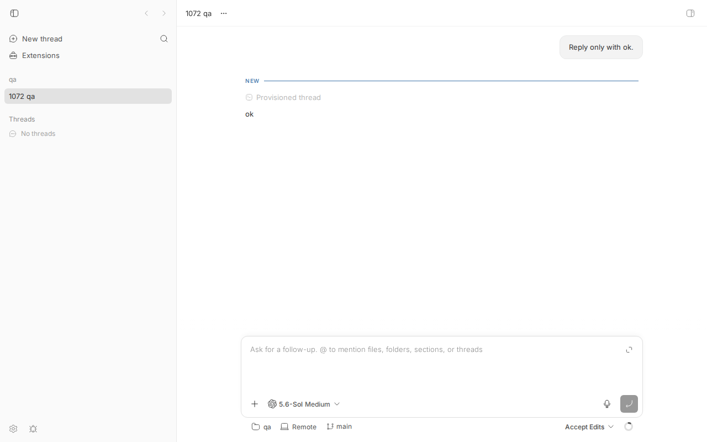

#1072 · workspace-checkout-display (1.7MB) bundles Monaco/Eddie editor eagerly — should be lazy
TL;DR
The issue says the web app's HTML shell preloads a 1.7 MB chunk called workspace-checkout-display that contains a code editor, so every page load parses the editor before rendering. The headline is already fixed on main: PR #1071 (merged 2026-08-06 14:13 UTC, six hours after this issue was filed) removed the eager edge (App.tsx → usePluginFrontendBoot → plugin-frontend.ts) and the HTML shell now preloads 14 chunks / 1641 KB with none of the editor, diff, Shiki, or KaTeX packages; a CI budget check (apps/app/bundle-budget.json + check-bundle-budget.mjs) guards it.
The issue's diagnosis is wrong on almost every point: there is no Monaco or "Eddie" editor in the repo (the editor is Tiptap/ProseMirror; the code viewer is @pierre/diffs); Cytoscape was never in that chunk (it is its own chunk behind mermaid's dynamic import); KaTeX is a separate 259 KB chunk that the shared chunk imports statically; and @/lib/workspace-checkout-display.ts is an 85-line pure function that imports nothing heavy. The chunk merely carries that name because Rolldown names a shared chunk after one of its member modules; splitting that file into "type" and "impl" would change nothing. The "1.7 MB" figure comes from the unmerged, closed PR #1070 branch; on main before #1071 the chunk was 2404 KB and preloaded.
What still holds, and is the reason this is only partially resolved: the same shared chunk still exists at HEAD (2148 KB raw / 527 KB brotli) and is a static import of the thread route chunk (SplitWorkspaceRoute, the * route). Opening any thread (or /) therefore fetches and parses 3349 KB of JavaScript beyond the shell before thread content renders — Tiptap/ProseMirror, @pierre/diffs + Shiki core, @pierre/trees, KaTeX, and Handlebars — even though none of them is needed for first paint of a thread. The issue's stated target "thread view first paint: no editor parsing on critical path" is not met. The thread page also spawns 8 diff workers at 834 KB each on mount.
Claims vs findings
| Claim | Status | Evidence |
|---|---|---|
| "After #1070 removed Shiki from the critical path" | Refuted (premise) | PR #1070 was closed unmerged (2026-08-06 14:03Z, author toasterman234); nothing from it landed. The 1.7 MB number was measured on that branch, never on main. |
workspace-checkout-display is 1.7 MB and preloaded via <link rel="modulepreload"> in the HTML shell | Verified for main before #1071, fixed at HEAD | At 3e3e1934f (parent of #1071) the shell preloaded workspace-checkout-display-Cucp3Qon.js = 2,403,781 bytes plus katex 259,230 bytes; total eager JS 4,162,234 bytes (boot-preload-3e3e1934f-before-1071.txt). At HEAD grep -c workspace-checkout-display dist/index.html = 0; eager set is 14 chunks / 1,680,734 bytes (boot-preload-16ceb3a54-head.txt). |
| Contains "Monaco/Eddie editor (~800KB+)" | Refuted | grep -ri "monaco\|eddie" **/package.json → no matches. The chunk's editor is Tiptap + ProseMirror (~600 KB) and the code viewer is @pierre/diffs (631 KB) + Shiki core/textmate/oniguruma (~250 KB) (chunk composition). |
| Contains "Cytoscape (~425KB)" | Refuted | cytoscape.esm-*.js is its own 425 KB chunk, imported only by mermaid's architectureDiagram/cose-bilkent chunks, which are behind MarkdownMermaidDiagram's dynamic import (why-eager: "only reachable behind a dynamic import — already lazy"). Same before and after #1071. |
| Contains "Katex (~253KB)" | Partly | KaTeX is a separate chunk (katex-*.js, 259 KB) that workspace-checkout-display imports statically (via components/ui/markdown-preview.tsx), so it rides along wherever that chunk is loaded: the shell before #1071, the thread route now. |
Import chain: files importing formatWorkspaceCheckoutDisplay make Vite bundle "the entire editor tree" | Refuted | apps/app/src/lib/workspace-checkout-display.ts is 85 lines and imports only type GitCheckoutRef. The chunk name is Rolldown's label for a shared chunk (facadeModuleId: null) whose 722 modules are common to the thread route, ToolsView, bb-logo and plugin-frontend chunks. The pre-#1071 eager edge was App.tsx → hooks/usePluginFrontendBoot.ts → lib/plugin-frontend.ts, which statically imported @pierre/diffs, Radix, sonner, vaul and plugin-sdk-app-impl (verified in git show 3e3e1934f:apps/app/src/lib/plugin-frontend.ts). |
| Fix 1: split the module into a type-only and an implementation module | Would not help | Nothing heavy is behind that module; see above. |
| Target: "No editor code in HTML modulepreload" | Met at HEAD | node scripts/check-bundle-budget.mjs: boot payload 1641.3 KB raw / 433.6 KB brotli, 14 chunks, none of the 20 forbiddenBootPackages. CI runs it (.github/workflows/ci.yml:61). |
| Target: "Thread view first paint: no editor parsing on critical path" | Not met at HEAD | The thread route chunk statically imports the shared chunk + katex: 3349 KB beyond the shell, containing 18 of the 20 forbidden packages (route-closure-16ceb3a54-head.txt). Real browser load of a thread page confirms the fetch order (browser JSON). |
| Target: chunk under 500 KB | Not met | 2,200,956 bytes at HEAD (larger in absolute terms than the 1.7 MB claimed; the shell just no longer preloads it). |
Environment
- bb
16ceb3a54(main, 2026-08-18) built withpnpm exec turbo run build; comparison build at3e3e1934f(parent of #1071). Rolldown-Vite production build,apps/app/dist. - Linux 7.0.0-29-generic, node v24.18.0, headless Chromium via
dev-browser. - Own dev instance from this worktree for the API only: server
:26591, host daemon:34591, app (Vite dev, not used for measurement):18591, data dir/home/sawyer/.bb-dev/projects-bb-.claude-worktrees-wf_debcf606-e4a-20-34f231678867. Because the dev launcher serves the unbundled Vite dev server, the production build was served by serve-prod-build.mjs on:18999(staticdist+/apiand WebSocket proxy to:26591). - Project
proj_5bi4w5xsk3(local path/tmp/1072-qa), threadthr_htggarvizz(codex, one "Reply only with ok." turn). - Revision run (see Verification): fresh worktree at
16ceb3a54, dev instance server:24027/ host daemon:32027, data dir/home/sawyer/.bb-dev/projects-bb-.claude-worktrees-wf_debcf606-e4a-44-d94932e3e507, projectproj_6b34bf5w5e(/tmp/1072-qa-v), threadthr_v52fuawjmu(codex). Stopped afterwards. - Note on
turbo run build: Turbo hashes inputs and may restoreapps/app/distfrom cache ("FULL TURBO") instead of recompiling. That output is byte-identical to a fresh build, so cached results are fine for every measurement below; add--forceif you want to watch the compile happen.
All repro artifacts live in /tmp/bb-reports/issues/1072/repro/; the commands below use absolute paths and are run from the repo root unless a cd is shown.
Minimal reproduction
1. The shell no longer preloads the chunk (already fixed)
$ pnpm exec turbo run build --filter=@bb/app
$ bash /tmp/bb-reports/issues/1072/repro/boot-preload-sizes.sh apps/app/dist # every JS file index.html loads eagerly
707301 assets/atomFamily-SooyRm32.js
401704 assets/index-BrddeseY.js
185467 assets/foreign-dom-mutation-guard-0BNPNIfU.js
154386 assets/useAppTheme-C8TEs0O9.js
98273 assets/useTheme-Blk5ve81.js
73415 assets/pill-v01_1v1X.js
18778 assets/plugin-settings-queries-BR1uvfFG.js
10744 assets/host-path-queries-BTXlmWfB.js
9318 assets/project-mutations-eE_GElRi.js
7795 assets/host-update-status-BVQS6lWw.js
7766 assets/provider-cli-install-Dd1ekti8.js
3378 assets/useQueries-B8jyeLax.js
1216 assets/chunk-jRWAZmH_.js
1193 assets/preload-helper-DzyYoeor.js
TOTAL eager bytes: 1680734
$ grep -c workspace-checkout-display apps/app/dist/index.html
0
$ cd apps/app && node scripts/check-bundle-budget.mjs
boot payload: 1641.3 KB raw / 433.6 KB brotli
budget: 1667.0 KB raw / 438.0 KB brotli
chunks: 14
Bundle budget OK.
Same script on the pre-#1071 tree (git checkout 3e3e1934f && pnpm install --frozen-lockfile --prefer-offline && pnpm exec turbo run build --filter=@bb/app; a turbo-cached "FULL TURBO" restore is fine, the numbers are identical):
2403781 assets/workspace-checkout-display-Cucp3Qon.js
729720 assets/page-shell-KvGLdvXe.js
340508 assets/index-De_z_NvI.js
314826 assets/plugin-catalog-queries-C1y1H4Zy.js
259230 assets/katex-Ddtr84f6.js
81819 assets/host-display-BHbl_5PW.js
…
TOTAL eager bytes: 4162234
2. The chunk is still on the thread route's critical path (open)
Script: 1072/repro/route-closure.mjs (copy into apps/app/scripts/ so it can resolve vite). It rebuilds in memory, walks static imports from the entry (the modulepreload set) and from the named route chunk, and lists what the route needs beyond the shell plus which forbiddenBootPackages from bundle-budget.json are on that path. Exit 1 = bug present.
$ cd apps/app && cp /tmp/bb-reports/issues/1072/repro/route-closure.mjs scripts/ && node scripts/route-closure.mjs SplitWorkspaceRoute
boot closure (HTML modulepreload set): 14 chunks, 1640 KB
=== assets/SplitWorkspaceRoute-BtH4wpTK.js: static closure 25 chunks, 4988 KB; beyond boot: 11 chunks, 3349 KB
2148 KB assets/workspace-checkout-display-2ZaYoVXJ.js
804 KB assets/SplitWorkspaceRoute-BtH4wpTK.js
253 KB assets/katex-BaASlWlt.js
53 KB assets/root-compose-create-preference-Dgv5yhDg.js
34 KB assets/workspace-open-target-preference-BJnPOKmu.js
32 KB assets/bb-logo-Ck3K005c.js
12 KB assets/page-shell-C9N9VtLZ.js
9 KB assets/ProjectMachineSetupDialog-Ut9X8xaP.js
3 KB assets/localhost-link-rewrite-preference-CNpYzPeF.js
0 KB assets/permission-mode-options-CCHrqGdE.js
0 KB assets/host-display-JQrwKVtc.js
forbiddenBootPackages present on this route's static path (18):
631 KB @pierre/diffs
444 KB katex
419 KB @pierre/trees
164 KB prosemirror-view
151 KB @tiptap/core
80 KB @shikijs/vscode-textmate
72 KB prosemirror-model
66 KB @shikijs/core
46 KB shiki
45 KB oniguruma-to-es
24 KB @tiptap/react
24 KB @pierre/theming
19 KB prosemirror-state
14 KB @shikijs/engine-oniguruma
3 KB @shikijs/engine-javascript
3 KB @tiptap/starter-kit
2 KB rehype-katex
0 KB @xterm/xterm
exit=1
Expected (issue target): a thread page renders without parsing editor/diff/math code. Actual: 3349 KB of it is a hard static dependency of the route chunk.
Two sizes for KaTeX. The chunk list reports the emitted, minified file (katex-BaASlWlt.js: 253 KiB in the script's KB units = 259,230 bytes on disk), while the "forbiddenBootPackages" list sums Rollup's per-module renderedLength for everything under node_modules/katex (444 KB, pre-minification, across all chunks in the closure). The same convention applies to every package figure in that list and in the chunk-composition output; the emitted-file byte counts are what the browser downloads.
3. Same thing observed in a real browser against the production build
Serve dist with the API proxied to a running bb server, open a thread, and dump performance.getEntriesByType("resource"). You need your own project and thread ids: the project id is the "id" in the POST /api/v1/projects response, the thread id is the "id" in bb thread spawn … --json. The wrapper browser-thread-page-loads.sh substitutes them into browser-thread-page-loads.js (dev-browser scripts run in a QuickJS sandbox with no process.env, hence the wrapper) and waits for load plus 6 s — networkidle never fires on a thread page because the app's WebSocket/long-poll traffic keeps the network busy, so it only times out. Output for this run: JSON.
$ scripts/bb-dev-app current # prints Server: http://localhost:<SERVER_PORT>
$ export BB_SERVER_URL=http://localhost:<SERVER_PORT>
$ pnpm bb:dev machine list --json # → "id": "host_…"
$ curl -s -X POST $BB_SERVER_URL/api/v1/projects -H 'content-type: application/json' \
-d '{"name":"qa","source":{"type":"local_path","path":"/tmp/1072-qa-v","hostId":"host_…"}}' # → "id":"proj_…" (/tmp/1072-qa-v = any git repo)
$ pnpm bb:dev thread spawn --project proj_… --provider codex --host host_… --environment /tmp/1072-qa-v \
--permission-mode accept-edits --title "1072 qa" --prompt "Reply only with ok." --json # → "id":"thr_…"
$ node /tmp/bb-reports/issues/1072/repro/serve-prod-build.mjs $PWD/apps/app/dist 18999 $BB_SERVER_URL &
$ bash /tmp/bb-reports/issues/1072/repro/browser-thread-page-loads.sh proj_… thr_… 18999
Actual output (revision run, project proj_6b34bf5w5e, thread thr_v52fuawjmu, server :24027; abridged, t = resource startTime in ms since navigation):
{
"url": "http://127.0.0.1:18999/projects/proj_6b34bf5w5e/threads/thr_v52fuawjmu",
"loadMs": 112,
"preloaded": [ 13 shell chunks …, "SplitWorkspaceRoute-BtH4wpTK.js", "workspace-checkout-display-2ZaYoVXJ.js", "katex-BaASlWlt.js", … ],
"perf": [
t=70 index-BrddeseY.js 401704, atomFamily-SooyRm32.js 707301, foreign-dom-mutation-guard-0BNPNIfU.js 185467,
useAppTheme 154386, useTheme 98273, pill 73415, … (the 14 shell chunks) ← #1071 result
t=223 SplitWorkspaceRoute-BtH4wpTK.js 822938
t=224 workspace-checkout-display-2ZaYoVXJ.js 2200956 ← still on the thread's critical path
t=224 katex-BaASlWlt.js 259230
t=223 root-compose-create-preference 54451, workspace-open-target-preference 35188, bb-logo 32386,
page-shell 12668, ProjectMachineSetupDialog 8745, localhost-link-rewrite-preference 2738, …
t=285 plugin-frontend-h5V6qVZW.js 108025 (lazy, as designed)
t=603 pierre-dark 30518, pierre-light 30520
t=799 worker-portable-DaFcwpf8.js 833577 × 8 ← @pierre/diffs worker pool, spawned on thread mount
],
"totalDecodedBytes": 11948220
}
"preloaded" is read after the route has loaded: Vite's preload helper injects modulepreload links for the route chunk's static closure at that moment, which is exactly the list step 2 predicts. The HTML shell itself (dist/index.html) still contains none of them.

/projects/proj_6b34bf5w5e/threads/thr_v52fuawjmu, revision run) rendered from the production build via the proxy. Nothing on this screen is a code editor, diff, file tree, or formula, yet the JS listed above was required to paint it.Root cause
Why the shell preloaded it (fixed). Rolldown/Vite emits a modulepreload for every chunk statically reachable from the entry. Before #1071 the entry reached the whole thread UI through one edge: App.tsx called usePluginFrontendBoot, which statically imported lib/plugin-frontend.ts, whose module-scope import * as pierreDiffs from "@pierre/diffs", Radix, sonner, vaul and plugin-sdk-app-impl (promptbox editor, markdown renderer) dragged 847 modules into the eager set. Rolldown put those shared modules into one chunk and named it after a member module, workspace-checkout-display. #1071 replaced the edge with a dynamic import (usePluginFrontendBoot.ts#L1-L3 → plugin-frontend-lazy) and added the budget check.
Why the thread route still pays for it (open). App.tsx lazy-loads the route (App.tsx#L78, mounted at path="*", #L325), but inside that route everything is a static import. The shortest static chains from SplitWorkspaceRoute.tsx and from ThreadDetailView.tsx (why-eager output, from ThreadDetailView):
| Package (KB in closure) | Edge that puts it on the route path |
|---|---|
@pierre/diffs 631 + Shiki core/textmate/oniguruma ≈250 | secondary-panel/FilePreview.tsx#L9-L15 (import { File as PierreFile, useWorkerPool } from "@pierre/diffs/react"), reached from RootComposeView and from ThreadDetailView → ThreadSecondaryPanelTabContent → ThreadStorageFilePreview. Only needed when a file is opened in the secondary panel. |
katex 444 renderedLength (emitted chunk 259 KB) + rehype-katex | ui/markdown-preview.tsx#L35-L41 (import rehypeKatex, import "katex/dist/katex.min.css"). Markdown is intrinsic to the timeline; math is rare and could be loaded when remark-math finds a math node. |
@tiptap/* + prosemirror-* ≈600 | promptbox/PromptBoxInternal.tsx via FollowUpPromptBox / NewThreadPromptBox. The composer is on every thread page but does not have to be parsed before the timeline paints. |
@pierre/trees 419 (inside SplitWorkspaceRoute chunk) | secondary-panel/useThreadStorageBrowser.ts#L8 (useFileTree), imported by ThreadDetailView. Only needed when the storage browser tab is open. |
handlebars 141 + source-map 53 (inside SplitWorkspaceRoute chunk) | ThreadDetailView → useThreadGitActions → lib/thread-operation-prompts.ts → @bb/templates → packages/templates/src/render-template.ts#L1. A full Handlebars runtime shipped to the browser to render git-action prompt templates the user may never trigger. |
Because all of these are static, Rolldown hoists them into the shared chunk (or the route chunk itself) and the browser cannot start rendering the timeline until roughly 5 MB raw (≈1.2 MB brotli) has been fetched, parsed and compiled — on every cold load, and after every deploy since asset hashes change. This is precisely the "thread view first paint" case the issue set as its target; #1071's budget only measures the entry closure, so nothing prevents the route closure from growing further.
Side finding. ThreadDetailWorkerPoolProvider (ThreadDetailWorkerPoolProvider.tsx#L10-L13) sizes the pool from navigator.hardwareConcurrency (getDiffWorkerPoolSize) and mounts on every thread page: the browser trace shows worker-portable-*.js (834 KB, the Shiki worker) fetched and instantiated 8 times ≈370 ms after navigation, with no diff on screen. Off the main thread, but 8 × 834 KB of parse plus 8 worker heaps on a phone is not free.
Proposed fix (first principles)
- Close the issue's diagnosis, keep the target. Retitle to "thread route statically loads editor/diff/tree/math/template code before first paint" (or fold into a new issue) so nobody spends time splitting
lib/workspace-checkout-display.ts. - Cut the five edges above with dynamic imports at the component that owns the feature, all in
apps/app:secondary-panel/FilePreview.tsx:React.lazythe PierreFile/useWorkerPoolconsumer (aPierreFilePreviewleaf) behind a skeleton; keep the markdown branch eager.ui/markdown-preview.tsx: drop the staticrehype-katex/katex.min.css; keepremark-math, and when the parsed tree contains a math node render through a lazily importedMarkdownMathvariant that addsrehypeKatex+ CSS (same pattern asMarkdownMermaidDiagram).secondary-panel/useThreadStorageBrowser.ts: move@pierre/treesinto the storage-browser tab content component and lazy-load that tab.lib/thread-operation-prompts.ts:await import("@bb/templates")inside the action handler (or precompile the two templates at build time and drop Handlebars from the browser bundle entirely).- Composer: render
PromptBoxInternalthroughReact.lazywith a plain-textarea-shaped placeholder so the timeline paints before Tiptap/ProseMirror parse; the existing shell already does this trick for the plugin runtime.
- Extend the ratchet: teach
vite-bundle-stats.tsto also emit the closure of theSplitWorkspaceRoutechunk and makecheck-bundle-budget.mjsapplyforbiddenBootPackages(minus the composer packages if step 2's last bullet is deferred) to that closure too. The repro script above is a working sketch of that check. - Optional: create the diff worker pool lazily on first
useWorkerPool()consumer, or cap it lower onnavigator.hardwareConcurrency-rich desktops until a diff is actually mounted.
Risks: React.lazy boundaries need Suspense fallbacks that do not shift layout (the composer in particular must keep its height and focus behaviour; the timeline's MarkdownPreview is rendered per row, so the math detection must be cheap and memoised). Any change to markdown-preview.tsx should be checked against markdown-preview tests and against the plugin SDK, which re-exports the markdown renderer to plugins.
PR review
No open PRs are linked to this issue. Context: #1070 (the PR this issue builds on) was closed unmerged; #1071 (merged) fixed the shell-preload half and closed #1063.
Related issues
- #1063 (closed by #1071): mobile lag, 2.3 MB Shiki chunk in workspace-checkout-display — the parent report.
- #1070 (closed PR): the branch on which the "1.7 MB" figure and the "Monaco/Eddie" attribution originate.
- #1616: iOS Safari performance audit (runtime findings; complements this bundle-shape finding).
- #1303: opening a thread fires ~19 API requests — the network-side twin of the JS-side cost here.
- #1301, #1304: timeline DOM size / composer keystroke cost, both amplified when the composer and timeline modules are large.
Appendix
Commands run
pnpm install --frozen-lockfile --prefer-offline
pnpm exec turbo run build
bash /tmp/bb-reports/issues/1072/repro/boot-preload-sizes.sh apps/app/dist
cd apps/app && node scripts/check-bundle-budget.mjs
cd apps/app && node scripts/chunk-composition.mjs workspace-checkout-display SplitWorkspaceRoute katex cytoscape
cd apps/app && node scripts/route-closure.mjs SplitWorkspaceRoute
cd apps/app && node scripts/why-eager-from.mjs SplitWorkspaceRoute.tsx node_modules/katex node_modules/@pierre/diffs node_modules/shiki/ node_modules/@tiptap/core node_modules/prosemirror-view node_modules/mermaid node_modules/cytoscape node_modules/@pierre/trees node_modules/handlebars node_modules/@xterm/xterm
cd apps/app && node scripts/why-eager-from.mjs thread-detail/ThreadDetailView.tsx node_modules/katex node_modules/@pierre/diffs node_modules/@tiptap/core
git checkout 3e3e1934f && pnpm install --frozen-lockfile --prefer-offline && pnpm exec turbo run build --filter=@bb/app
bash /tmp/bb-reports/issues/1072/repro/boot-preload-sizes.sh apps/app/dist # 4162234 eager bytes
git checkout 16ceb3a54 && pnpm exec turbo run build --filter=@bb/app
scripts/bb-dev-app current # server :26591
curl -s -X POST $BB_SERVER_URL/api/v1/projects -H 'content-type: application/json' -d '{"name":"qa","source":{"type":"local_path","path":"/tmp/1072-qa","hostId":"host_4un8t4puap"}}'
node packages/scripts/dist/commands/run-cli.js thread spawn --project proj_5bi4w5xsk3 --provider codex --host host_4un8t4puap --environment /tmp/1072-qa --permission-mode accept-edits --title "1072 qa" --prompt "Reply only with ok." --json
node /tmp/bb-reports/issues/1072/repro/serve-prod-build.mjs apps/app/dist 18999 http://localhost:26591 &
dev-browser --headless --timeout 60 run /tmp/bb-reports/issues/1072/repro/browser-thread-page-loads.js # original run (hardcoded ids; script since replaced)
pnpm dev:stop
# revision run (fresh worktree, 16ceb3a54)
pnpm install --frozen-lockfile --prefer-offline && pnpm exec turbo run build
bash /tmp/bb-reports/issues/1072/repro/boot-preload-sizes.sh apps/app/dist # TOTAL eager bytes: 1680734
scripts/bb-dev-app current # server :24027, host daemon :32027
BB_SERVER_URL=http://localhost:24027 pnpm bb:dev machine list --json # host_3v3ynsww6n
curl -s -X POST http://localhost:24027/api/v1/projects -H 'content-type: application/json' -d '{"name":"qa","source":{"type":"local_path","path":"/tmp/1072-qa-v","hostId":"host_3v3ynsww6n"}}' # proj_6b34bf5w5e
BB_SERVER_URL=http://localhost:24027 node packages/scripts/dist/commands/run-cli.js thread spawn --project proj_6b34bf5w5e --provider codex --host host_3v3ynsww6n --environment /tmp/1072-qa-v --permission-mode accept-edits --title "1072 qa" --prompt "Reply only with ok." --json # thr_v52fuawjmu
node /tmp/bb-reports/issues/1072/repro/serve-prod-build.mjs $PWD/apps/app/dist 18999 http://localhost:24027 &
bash /tmp/bb-reports/issues/1072/repro/browser-thread-page-loads.sh proj_6b34bf5w5e thr_v52fuawjmu 18999 > /tmp/bb-reports/issues/1072/repro/browser-thread-page-loads-16ceb3a54-head.json
pnpm dev:stop
Chunk composition at HEAD (top of full output)
=== assets/workspace-checkout-display-2ZaYoVXJ.js 2148 KB, 722 modules
1152 KB (app) apps/app/src/components
631 KB @pierre/diffs
191 KB parse5
167 KB entities
164 KB prosemirror-view
151 KB @tiptap/core
134 KB (app) apps/app/src/hooks
80 KB @shikijs/vscode-textmate
72 KB prosemirror-model
68 KB @tiptap/extension-blockquote
66 KB @shikijs/core
…
facadeModuleId: null
static importers (4): assets/SplitWorkspaceRoute-BtH4wpTK.js, assets/ToolsView-CCgxFyOF.js, assets/bb-logo-Ck3K005c.js, assets/plugin-frontend-h5V6qVZW.js
dynamic importers (0):
this chunk statically imports: … assets/katex-BaASlWlt.js
=== assets/cytoscape.esm-Cyf_3KdK.js 425 KB, 1 modules
static importers (2): assets/architectureDiagram-…js, assets/cose-bilkent-…js # mermaid sub-chunks, behind import()
=== assets/SplitWorkspaceRoute-BtH4wpTK.js 804 KB, 217 modules
515 KB (app) apps/app/src/components
419 KB @pierre/trees
343 KB (app) apps/app/src/views
141 KB handlebars
53 KB source-map
dynamic importers (1): assets/index-BrddeseY.js
Pre-#1071 eager edge (source at 3e3e1934f)
$ git show 3e3e1934f:apps/app/src/hooks/usePluginFrontendBoot.ts | head -3
import { useEffect } from "react";
import { bootPluginFrontends } from "../lib/plugin-frontend";
$ git show 3e3e1934f:apps/app/src/lib/plugin-frontend.ts | grep -n "^import" | sed -n 20,26p
24:import * as pierreDiffs from "@pierre/diffs";
25:import * as pierreDiffsReact from "@pierre/diffs/react";
…
39:import { pluginSdkAppImplementation } from "./plugin-sdk-app-impl";
Things checked and ruled out
grep -ri "monaco\|eddie"across allpackage.jsonfiles: no hits; there is no Monaco editor dependency anywhere in the monorepo.- Mermaid and Cytoscape:
why-eagerreports both as "only reachable behind a dynamic import" from the thread route, so the issue's audit request for Cytoscape is already satisfied. - The 1072-named chunk hash differs between builds (
Cucp3Qonpre-#1071,2ZaYoVXJat HEAD); the turbo-restoreddistat 3e3e1934f still contained HEAD's files, so the size numbers above were read from the correctly hashed file each time.
Verification
An independent verifier re-ran the report from a fresh worktree at 16ceb3a54 (plus a second build at 3e3e1934f). Steps 1 and 2 reproduced byte-for-byte (14 eager chunks / 1,680,734 bytes, grep -c = 0, budget 1641.3 KB / 433.6 KB brotli OK; pre-#1071 shell preload 2,403,781 + 259,230 bytes, total 4,162,234; route closure 11 chunks / 3349 KB with 18 forbidden packages, exit 1). Every permalinked code excerpt, the #1070/#1071 timeline, the absence of Monaco/"Eddie" in any package.json, Cytoscape's dynamic-only reachability, and the brotli arithmetic behind the SVG were confirmed; nothing on origin/main after 16ceb3a54 touches the relevant files. Step 3 matched (SplitWorkspaceRoute 822,938, workspace-checkout-display 2,200,956, katex 259,230, 8 × worker-portable 833,577, total 11,948,220 bytes) but only after the verifier edited the browser script.
Findings and what changed in this revision:
- Major — browser script not runnable by others (hardcoded author project/thread ids and port;
waitUntil: "networkidle"timed out after 25 s on a live thread). Fixed:browser-thread-page-loads.jsnow carries a URL placeholder filled in by the newbrowser-thread-page-loads.sh <project> <thread> [port]wrapper (dev-browser's QuickJS sandbox exposes noprocess.env/argv, so a wrapper is the only way in), and waits forload+ 6 s instead ofnetworkidle. Step 3 was re-run end to end on a fresh dev instance (server:24027, projectproj_6b34bf5w5e, threadthr_v52fuawjmu); the JSON artifact and the screenshot in this report are from that re-run and match the original numbers exactly. Step 3 now also says how to obtain the ids. - Minor — relative artifact paths: the numbered steps now use absolute
/tmp/bb-reports/issues/1072/repro/…paths and a base-directory note was added under Environment. - Minor — three KaTeX sizes: added an explanation (Rollup
renderedLength444 KB vs emitted minified chunk 253 KiB / 259,230 bytes) after the step 2 output and in the root-cause table. - Minor — turbo cache: noted under Environment that a "FULL TURBO" cached
distis byte-identical and acceptable, with--forceas the alternative.
Second verification pass (2026-08-18, worktree wf_debcf606-e4a-20, HEAD 16ceb3a54). Re-ran the build and the checks without a dev instance: dist/index.html contains 0 references to workspace-checkout-display; the chunk on disk is 2,200,956 bytes, katex-BaASlWlt.js 259,230, cytoscape.esm-Cyf_3KdK.js 435,413 (separate chunks); check-bundle-budget.mjs reports 1641.3 KB / 433.6 KB brotli, 14 chunks, OK; route-closure.mjs SplitWorkspaceRoute again prints 11 chunks / 3349 KB beyond boot with the same 18 forbidden packages and exits 1 (route-closure-16ceb3a54-head-rerun2.txt, head-rerun2-summary.txt). Every permalinked excerpt (FilePreview.tsx L9-15, markdown-preview.tsx L35-41, useThreadStorageBrowser.ts L8, App.tsx L78/L325, ThreadDetailWorkerPoolProvider.tsx L10-13, usePluginFrontendBoot.ts L1-3, render-template.ts L1) matches the tree; PR #1070 is CLOSED unmerged (2026-08-06T14:03:12Z) and 3e3e1934f is the parent of #1071; origin/main after 16ceb3a54 does not touch FilePreview, markdown-preview, SplitWorkspaceRoute, vite.config, bundle-budget or usePluginFrontendBoot. Verdict and confidence unchanged.